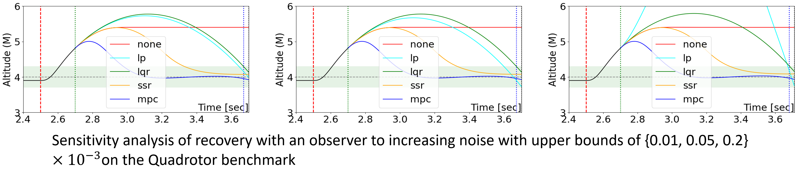

Examples
Numerical Simulators
In this file, we choose a benchmark plant, CSTR shown in the following figure, controlled by a PID controller. Also, we define the bias sensor attack that subtracts 25K from the temperature sensor feedback starting from the ninth second. The detector identifies the attack at the 10th second, and triggers the recovery controllers. Baseline recovery controllers include (i) no recovery method (none), (ii) software-sensor-based recovery (ssr [1]_), (iii) linear-quadratic-regulator-based recovery (lqr [2]_), and (vi) data-predictive recovery (mpc [3]_).
First, we aim to evaluate the recovery performance of different baseline recovery controllers. We only require modifying the configuration file rather than writing simulation code. In this file, we use three benchmark plants, CSTR, quadrotor and Vessel, controlled by a PID controller. Also, we define the bias sensor attack. The detector identifies the attack after the attack happends and triggers the recovery controllers. Baseline recovery controllers include (i) no recovery method (none), (ii) software-sensor-based recovery (ssr [1]_), (iii) linear-quadratic-regulator-based recovery (lqr [2]_), and (vi) data-predictive recovery (mpc [3]_).
The following figure plots the results from the simulator. From the curve, we can intuitively analyze the recovery performance of each baseline recovery controller.
{kind=link}
We conduct a sensitivity analysis by varying bias values and noise on the CSTR benchmark. The findings are displayed in the two figures below.
{kind=link}
{kind=link}
We also provide the sensitivity analysis by the noise with varying upper bound on the quadrotor benchmark.
{kind=link}
We provide the source code of above figures.
Reference:
Fast Attack Recovery for Stochastic Cyber-Physical Systems
We present the simulations for the Fast Attack Recovery for Stochastic Cyber-Physical Systems paper [4]. We propose the solution to the Optimal probabilistic recovery (OPR). We use the linear model of a motor as an example. For the experiments in the paper, we simulate a bias attack against the motor angular speed measurement by adding a bias of -1m/s. The adversary deploys the attack at time 3s after beginning the simulation, and the detector identifies the attack one second later. This alarm triggers the recovery strategies.
We compare the performance of our solution, called the open loop OPR (OPR-OL), with the LQR-based recovery [2]_, and virtual sensors. We then obtain the next Figure:
{kind=link}
We also include the simulations to improve our solution by incorporating the non-compromised sensors into the recovery. We call this strategy the partially closed loop OPR (OPR-PCL). We compare the OPR-OL and OPR-PCL:
{kind=link}
We provide the code to obtain previous figures.
An user can change the attack characteristics (e.g., detection delay).
Reference:
High-fidelity Simulators
Since CPSim is a python package, it can be used in conjunction with any simulator that can be called from python. Especially, many high-fidelity simulators are controlled through python node of ROS, such as Gazebo, SVL, CARLA, and AirSim.
This example demonstrates how to use the toolbox to recover an autonomous vehicle in the SVL simulator. The vehicle suffers from an IMU sensor attack, deviates from its own lane, and even enters the oncoming lane, as shown in Figure (a). To apply the lqr recovery controller [2]_ after detecting the attack, we need to integrate the toolbox with the SVL simulator. Since there is a ROS bridge communicating with the simulator, we load the toolbox in a ROS node, which is responsible for recovering the vehicle from the attack within a safety deadline. Figure (b) shows that vehicle returns to its lane during the recovery process. Figure (c) shows that the recovery controller steers the vehicle to a safe region, the road shoulder, to avoid a collision after recovery.
{kind=link}
Finally, we show the demonstration video here.
Robotic Vehicle Testbed
Autonomous vehicles are a type of CPS that rely on sensor information to perform tasks such as path tracking and lane keeping. We built scaled autonomous vehicles, measuring 24 cm in length and 19 cm in width, as testbeds to evaluate the proposed attack detection and recovery methods.
{kind=link}
Autonomous vehicles sense states and environments, make decisions, and control mobility. Our robotic vehicle testbeds, whose hardware architecture is shown in the following figure, simulate these functions through the following stages:
Perception: Our testbed is equipped with an Inertial Measurement Unit (IMU), Ultra-wideband (UWB), and encoder sensors that measure attitude, position, and velocity, respectively. We can also use cameras and LiDAR to collect additional environmental data. However, these sensors are vulnerable to sensor attacks.
Decision Making: A Raspberry Pi with Robot Operating System (ROS2) serves as the main controller. It collects sensor data, estimates vehicle states, and generates control signals. The system uses different controllers for longitudinal and lateral control. For cruise control, a PID controller stabilizes the testbed’s velocity based on encoder feedback. For lane keeping, a Stanley Controller uses the front axle as its reference point, considering both heading error and cross-track error. We can also deploy the proposed attack detection and recovery algorithms on this system.
Control: An STM32 microcontroller with FreeRTOS system receives control signals from the Raspberry Pi through a Universal Asynchronous Receiver/Transmitter (UART) protocol. Running a real-time operating system, it performs time-sensitive tasks such as generating Pulse Width Modulation (PWM) signals to drive actuators.
Actuator: The actuator stage includes components such as motors and servos that execute vehicle movements according to control signals.
{kind=link}
To demonstrate the toolbox usage, we show a real-time attack recovery on SVL high-fidelity simulator. We implement the LQR-based attack recovery method [2]_ on the robotic vehicle testbed, and the design is illustrated in this figure:
{kind=link}
Autonomous vehicles perform lateral control to track paths provided by path planning modules. High-fidelity models of vehicle dynamics are complex, non-linear, and discontinuous. However, to reduce computational complexity, path tracking controllers typically consider a simplified lateral dynamics model of the vehicle (as shown in the following equation). This model approximates dynamic effects to improve tracking performance.
Here, \(c_f\) and \(c_r\) represent cornering stiffness for the front and rear tires; \(l_f\) and \(l_r\) are the distances from the front and rear tires to the vehicle’s center of gravity; \(I_z\) is the vehicle’s moment of inertia; and \(v_x\) is the longitudinal velocity. The system states are lateral distance from the path (\(y\)), lateral error rate (\(\dot{y}\)), yaw error (\(\psi\)), and yaw error rate (\(\dot{\psi}\)). The control input is the front wheel steering angle ( \(\delta\)).
To achieve path tracking, we implement the Stanley lateral controller in ROS. The control law is expressed as \(\delta(t)=\psi(t)+\tan ^{-1}\left(\frac{k y(t)}{v_x(t)}\right)\). The yaw error (\(\psi\)) is obtained from the IMU sensor, and the lateral distance from the path (\(y\)) is obtained from the UWB sensor for indoor use. In the absence of sensor attacks, the controller can perform path tracking tasks with good performance. The attacker launches an attack on the IMU sensor, reducing the value of \(\psi\) by 0.60 radians from the start of the attack, with a detection delay of 60 control steps. Figure (a) shows the attack result as detected by the detector. Subsequently, our proposed method begins controlling the vehicle back to the safe zone, as shown in Figure (c).
{kind=link}
Finally, we show the demonstration video here.